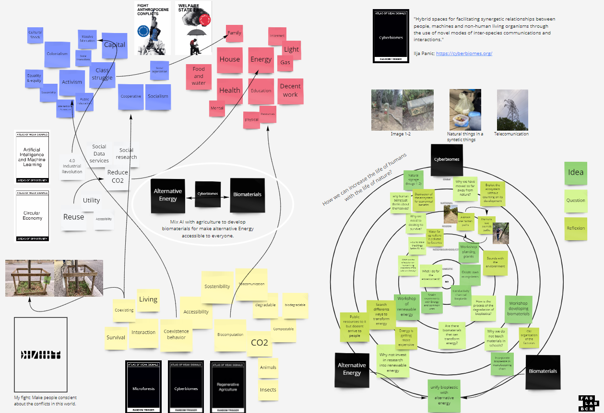
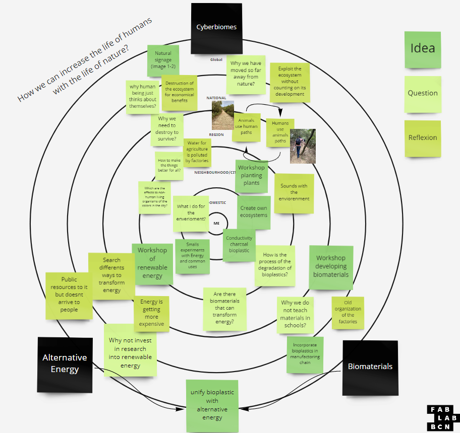
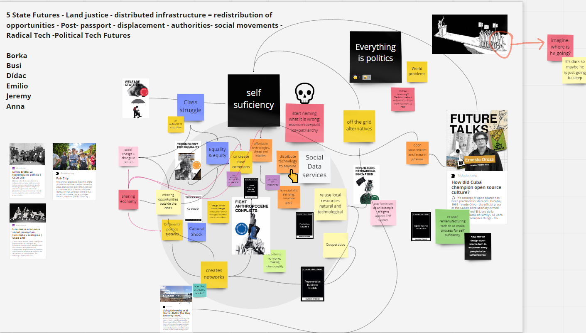

Atlas of Weak Signals
I chose as a weak signal Cyberbiomes:
"Hybrid spaces for facilitating synergetic relationships between people, machines and non-human living organisms through the use of novel modes of inter-species communications and interactions."
Ilja Panic
For me it is super interesting be able to observe how the ecosystem with the nature, non-human being and people cooperate in a same environment, creating each other different paths and ways to develop.
Multiscalar Diagram

With the observation of the environment correlating with my interest, I decided to mix the Alternative Energy with the biomaterials. Also because I see a connection with the cyberbiomes too; creating hybrid spaces to develop both of them together.
The behavior of the biodiversity shows different ways to think; how to make the things better for all? , why human being just thinks about themselves?, Why we need to destroy to survive?. Human being create the world for themselves and nobody more, and that cannot stand anymore. There are a lot of questions about the relation between humans and nature, but what makes me concern is; How we can benefit the life of humans with the life of nature?

Personal Reflexion
During the trip I could notice the difference of the noises depending on the air, distance and form of the mountain that arrive to the place. All of them of course provoked for the environment of nature and humans. Can you notice the different between both videos?
Just for remind
Take care of the nature.
Creating little environment with mutual respect between all the species.
Make workshops to understand the environment and be conscient of it.
Use sustainability and nature responsibly.
Collaborative Diagram

As I see it, the life of comfort that we have been living and living in the capitalist system, helps us to destroy above all to improve the world as a community of nature, not just as a community of human beings. This system makes us forget about other lives, individualizing the state and services into a single focus; straight white cisgender rich man.
To contribute to other people always makes you open your mind, and see different points that for you alone it's impossible. For that the collaboration is an important step in all the aspects political.
Something to do
I will love to contact with Instituto Permacultura Montsant because they work with houses with their own circular ecosystem. It will be interesting understand and know more about their works.
I will love to develop a electrical generator from mechanical energy. There are different videos on Youtube that can help on that.
I always have been very observative and analytical, but I will add in both skills after this week the determination, at the end, if you don't have a focus to point those skills you will lose the attention and create noise instead of thoughts.